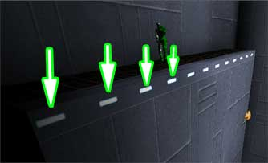

Lighting Strategies
So you want to be hailed for great lighting in your map? You have to understand how real light works and what tools are available in Unreal to emulate it.
This page describes techniques for UnrealEngine 1 games. UnrealEngine 2 and above may provide better solutions for some problems described here.
Understanding How Light Works
Since Unreal lights do not follow real light physics, its lighting can easily look fake. However, there are a variety of Unreal lights that can make lighting look real. It is first helpful to understand how real light works.
- parallel light rays, such as sunlight, create hard edged shadows
- refracted light rays due to overcast skies or fog create soft edged shadows
- light fades exponentially in air (it gets darker as it distance from the source increases)
- light generally scatters in all directions
- light bounces off surfaces
- light is absorbed by surfaces
- light carries a surface's color
- light sources have a distinct color temperature
- light sources have a small but bright hotspot
The Primary Light Types
As you master lighting with Unreal, you will find the majority of your light combinations will be only two. All lights will be affected by the minor tools:
- radius
- colors
- brightness
![[light.steady]](images/light-steady.gif) Light Type: Steady, Light Type: None |
The steady light with no effect has a quick falloff to the unbra shadow. Since only a small portion of the radius is lit (what we call a hotspot) and a large portion is in shadow, it is a good type to use for 'atmosphere' or 'mood' because it will highlight a specific area while coloring everything around it with just enough light to make it visible, yet dark enough to be threatening. |
![[light.nonincidence]](images/light-nonincidence.gif) Light Type: Steady, Light Effect: Non-Incidence |
The opposite of the steady/none light is the steady, non-incidence light. It emphasizes the hotspot by spreading it out over a wide area then quickly falling off into the shadow umbra. It is a good choice to light a large area smoothly without making things to light or dark. |
![[light.cylinder]](images/light-cylinder.gif) Light Steady Light Effect: Cylinder |
The cylinder is worth mentioning because it is primarily used when even floor lighting is desired, especially on terrain in UT. However, UT2003 uses a better method with the Sunlight actor. |
Faking realistic light
By considering real light characterstics, the following technique demonstrates how to closely mimic real lighting in Unreal.
![[real.light1]](images/real-light1.jpeg) |
This light is used as the hotspot. It is not showing the torch graphic because its texture been changed to a corona to imitate a flare.
|
![[real.light2]](images/real-light2.jpeg) |
This is our falloff light that scatters around.
|
![[real.light3]](images/real-light3.jpeg) |
This is our bounce light near the closest surface that reflects the light back onto the scene. If this were a different colored wall, the dominate hue of that exture could be used on this light.
|
Things to Note
- It takes a minimum of 2 lights (hotspot and falloff) to look good
- Bounced light isnt necessary, but adds to the realism effect
- One bounce light may be used if multiple lights in an concentrated area are used.
Fully lit lights on Gradient Shadowed Textures
If you want a magnitude of light fixtures flush with a gradiantly shadowed surface surface, there is a few problems that need to be solved:
- Adding each light fixture into the surface as a solid creates BSP cuts
- Adding each light fixture 1 pixel from the surface as a nonsolid is tedious.
- Each light fixture must have its own light actor and there is a limit (around 1000) that Unreal is limited to.
- Each light actor will light in a spherical or cylindrical radius, limiting your light fixture shapes and/or lighting undesired areas.
All of these issues can be solved.

|
The surface fades from light to shadow nicely, but the rectangular light fixtures in shadow are darkening too. If we were to add a light for each fixture, we would run out of lights to use very quickly. |
![[unlit.light.mask.on.surface2]](images/unlit-light-mask-on-surfac1.jpeg) |
(Remember that newer engine versions provide nifty features like Shaders with self-illumination texture and mask that work a lot better than additional sheets in cases like this.) |
![[unlit.light.mask.on.surface3]](images/unlit-light-mask-on-surfac2.jpeg) |
|
|
Lights in a Dirty World
When light is in an area of where minute particles are floating the air, we can see the light hitting those particles, resulting in a light beam. 3D engines dont account for air particles (yet), so they fake it. In Unreal, they are called lightboxes.
Most mappers mix lightboxes with lights without beams. By mixing the two types, it suggests that particles reside in a confined space. In reality, you would have all light sources in a given area show a beam at differnet intensities because of the particles floating in that area.
Rather than make multiple itensity levels for various light sources, you can encompass all light sources with fog, placing light boxes inside the area and let the fog's density level suggest the particle boundary.
Sky Light
This is the easiest method for creating nice shadows. Creating a skybox and sticking a grated (or glass criss-crossed with some sort of grating) window works with just about any (indoor) theme. Once you've constructed the beams and grate architecture, stick a light behind them on the skybox surface. Change its brightness, radius and light type and the beams will cast shadows onto your walls and floor.
Wall Lights
About the only thing I can think of for creating shadows in this sense is to make a corridor with pillars or supports running down it. Put lights in between each pillar with high brightness and low radii. Rebuild, and watch as each light spills out from the pillar and there is a shadowy area between the lights.
Spotlights
Hard shadows
Cylindrical lighting
- When it can be useful
Conclusion
To create shadows just about anywhere, just use high brightness, low radius lights. They'll light a small area, making a sharp contrast between that light and the darker areas around it. Just make sure that you allow enough light for gameplay purposes instead of focusing on atmosphere alone. Darkness may be cool in single-player maps, but in multiplayer maps, it's best to give the players some light.
Related Topics
- Lighting is the hub for all things light related
- You may find Lighting Basics helpful
- Learn how to avoid lightmap errors
Comments
Sobiwan: I'm opening another can of worms. 
Tarquin: Seems like a good idea
Sobiwan: I read somewhere that you weren't good at lighting. If that's true, we're gunna change all that!
Tarquin: My problem is that the hotspot light never looks quite right - it always lights up things around the light fitting or even behind it, that shouldn't be. Nice terminology, by the way – "hotspot", etc. Makes it easier to absorb. Plus I find lighting so tedious and slow – make tiny change, rebuild lighting... it still sucks, make tiny change, rebuild....etc
Sobiwan: Have you tried special lit to control where light goes?
Sobiwan: merged "Shadows" here.
Ironblayde: Gah! There's a maximum on the number of light actors you can use? Can anyone confirm what this is, exactly, and whether there are any sneaky workaround aside from the one mentioned above? I'm going to be way over 1,000 at the rate I'm going on my map (UT, UnrealEd 2).  I know I've seen some maps over 1,000 before. CTF-LocustWind has 1,384, for example. Can anyone shed some light on this problem? (groan!)
I know I've seen some maps over 1,000 before. CTF-LocustWind has 1,384, for example. Can anyone shed some light on this problem? (groan!)
More: This morning I decided to try an experiment, so I opened LocustWind and added 1,500 more lights to it. It took a long time to build, but build it did, and when I loaded it up in UT, sure enough, there were all kinds of colored spots that weren't there before, and dozens of coronas floating in midair. The final count was nearly 3,000 lights. What does this mean for the supposed light limit mentioned in this document? What's supposed to happen when you reach that maximum? Will UnrealEd pop up some kind of error message or something? It certainly seems to me that if a limit does exist, it's considerably higher than the estimate given on this page.
SuicideMissions{CLR}: It seems like that number (1000) is wrong. After all *any* actor can emit light by setting its properties under Lighting and LightColor. The only way that there could be a limit on lights is if there was a limit on instances of Actor. What *is* limited though, is the amount of resolution available for making light/shadow shapes on surfaces.
Sigh. Lighting is soooooooooo tedioius and really does not look very good. *IF ONLY EPIC WOULD MAKE A LIGHT PAINTER TOOL!!!* Imagine being able to paint light directly on your 3D suraces! They already made a terrain painting tool. Technically, I think a light painting tool would be easier to program than a terrain painter. Basically, it would just modify the lightmap in real time and you could select from a round brush, square brush, and maybe a couple more complex brushes (like a "rough" brush for painting surfaces that are rough). This would be so much less tedious than using light actors, and the results would be far closer to what the artist imagines.... just like Fine Painters!
MythOpus: The problem (if you did not use any light actors at all in your map) is that no actors in the level would be lit. They would all be dark black unless the particular actor was set to unlit. Using this light painting tool with lights would cause yet another problem. They would light both bsp and actors, but that lighting might collide with the light you've created with the painting tool. I guess it would be great if you could edit the light more efficiently though. For example, telling exactly where the light beams can/can not go and how far the light can go before it gives absolutely no light off (i.e. stop a light beam in it's tracks in one area and not in another  ) I think the lighting system is a lot worse now compared to that of Unreal Tournaments lighting system though. With UT, I found there was a lot less light bleeding.
) I think the lighting system is a lot worse now compared to that of Unreal Tournaments lighting system though. With UT, I found there was a lot less light bleeding.